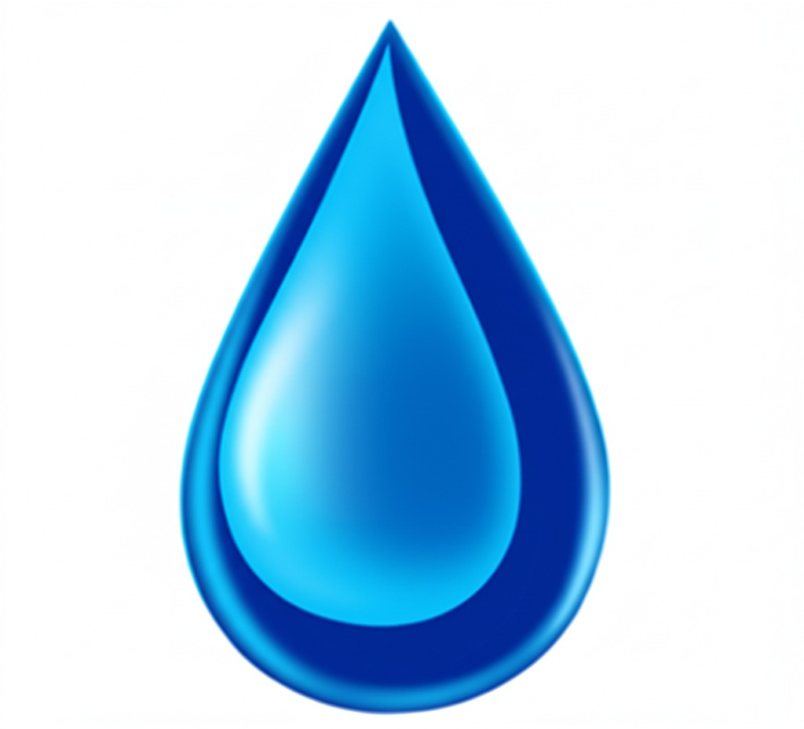

Protéger la ressource
Une source ne se remplace pas. Le périmètre de captage est préservé, l'exploitation est calibrée sur la capacité réelle de la nappe, et nous refusons toute logique de prélèvement maximal à court terme. Notre horizon, c'est la génération suivante.